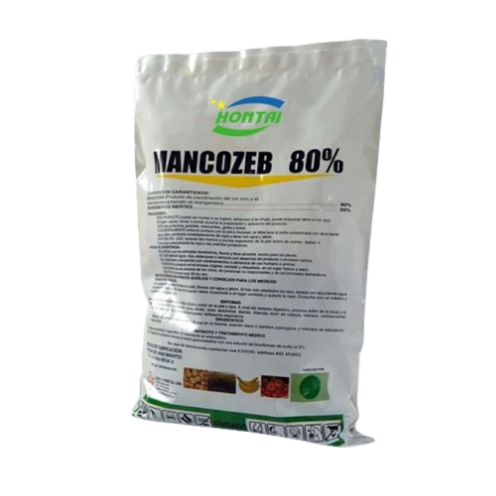

MANCOZEB
TRABALHO DE QUÍMICA
agro - eng. comp
o que é
O produto é um fungicida protetor do grupo químico dos ditiocarbamatos

Possui ação multissítio no alvo, controlando inúmeras doenças fungicas que causam danos econômicos em várias culturas.
o que é
É ideal para a rotação de fungicidas com produtos sistêmicos no MID (Manejo de Integrado de Doenças)
Além de ação multissítio, Mancozeb possui micronutrientes como zinco e manganês e melhora eficiência de produtos sistêmicos contra os fungos. A utilização dos fungicidas protetores em lavouras de soja tem mostrado uma melhora significativa na eficiência dos produtos sistêmicos no combate a ferrugem asiática.

características químicas
C₄H₆MnN₂S₄Zn
Composto de carbono, hidrogênio, manganês, nitrogênio, enxofre e zinco.
Ditiocarbamato não sistêmico
Combinação de dois ditiocarbamatos: maneb e zineb
propriedades físico-químicas
baixa solubilidade aquosa
muito volátil
não é persistente no solo, mas é persistente na água
pouco tóxico porém com efeitos adversos na reprodução/desenvolvimento de mamíferos